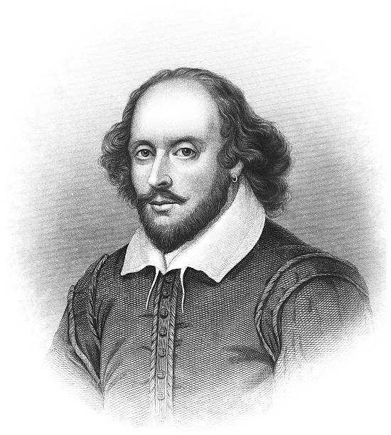

Introduction to William Shakespeare |
|
|---|---|
William Shakespeare was a world-famous English playwright, poet and actor who lived more than 400 years ago. For this reason, a lot of information about his life is missing and left for us to guess, one of which being the date of his birth. The exact date is unknown but traditionally set to be April 23rd in the year 1564.
This specific date was chosen because Shakespeare was baptized 100 miles northwest of London in Stratford-upon-Avon on April 26th, 1564. Taking this into account, Shakespeare’s date of birth must have been a few days earlier, possibly the 23rd. Secondly, Shakespear died on April 23rd in the year of 1616. Considering that Shakespear himself was a poet, it seems fitting that he was born and died on the very same day 52 years apart.
|
 Portrait of William Shakespeare |
William Shakespeare was born to John and Mary Shakespeare and was the oldest surviving child. Their first 2 children, both of whom were girls, did not survive past infancy. William later got 2 younger sisters, Anne and Joan, and 3 younger brothers, Gilbert, Richard, and Edmund. Anne however died at the early age of seven.
Shakespeare’s mother, Joan Shakespeare, had the maiden name Arden which was a prominent family. His father, John Shakespeare, was a prosperous businessman, a leather worker who specialized in glove-making with soft white leather. After their marriage he rose through the local offices in Stratford and became an alderman, and eventually even the town bailiff - which is similar to a mayor - when William was five. It was not long after that, for reasons unknown, that John Shakespeare stepped back from his public life. Although it has not been verified, Shakespeare almost certainly attended Stratford’s grammar school considering his fathers elevated status.
In late 1582 Shakespeare married Anne Hathaway, only a few years after he left school. The reason for their early marriage was that Anne was already pregnant with their first-born child Susanna. Anne was 26 years old at the time and Shakespeare was 18. Three years later in 1585 Anne and Shakespeare had twins, Judith and Hamnet. As previously mentioned, Shakespeare’s work was in London which meant he was separated from Anne and his children who were living in Stratford. His only son, Hamnet, later died in 1596 at the early age of 11. Susanna, his older daughter, married a doctor named John Hall. The two had a daughter together in 1608, Elizabeth, who was Shakespeare’s first grandchild. In 1616 Shakespeare’s second daughter, Judith, married a vintner - which is a wine merchant - named Thomas Quiney. Only a few months later did Shakespeare die.
It is unknown when exactly Shakespeare moved to London and started his career. His twins, Hamnet and Judith, were baptized in 1585 and his reputation was already established in London in 1592, so naturally it was at sometime in between this period. These seven years are a complete mystery and are even sometimes referred to as “The Lost Years”.
It was during Shakespeare’s time in London that his first printed works were published. In 1593, he published “Venus and Adonis”, and “The Rape of Lucrece” in 1594. At some point, Shakespeare also became a founding member of The Lord Chamberlain’s Men, later to be renamed The King’s Men in 1603, which was a company of actors. His role was that of a dramatist, and over the course of twenty years he produced on average two plays per year. These includes many of his most famous tragedies such as “King Lear” and “Macbeth”, along with great romances like “The Tempest” and “The Winter’s Tale”.
As a result of his success, he prospered financially, both from his partnership in The Lord Chamberlain’s Men and his writing and acting. Much of the wealth he accumulated was invested into real-estate in Stratford and he even bought the second-largest house, New Place, in 1597. Though the house no longer stands, tourists can still visit the estate which now features a specially designed garden.